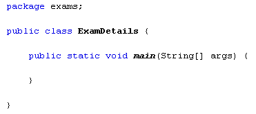

When you create a class, you're writing code to do a particular job. That job might be to do with an employee, but not the company's sales figures at the same time. You would write a separate class for the sales figures. That way, you can re-use the employee class in another project. The sales figures would be redundant data.
When you're trying to come up with your own ideas for classes you should bear in mind that redundancy issue and ask yourself, "Is there any code in this class that doesn't need to be here?"
Let's make a start.
Create a new Java project for this. Call the package exams, and then change the name of the Main method to ExamDetails. You should then have the following code:

We'll create a second class to handle the exam data. So, in NetBeans, click File from the menu bar at the top. From the File menu, select New File. Highlight Java from the Categories list, and Java Class from the File Types list. Then click Next. On the next screen, enter StudentResults as the class name. Then click Finish. NetBeans will create a second class in your project. You can delete any default comments.
In the next lesson, you'll learn about Field Variables.